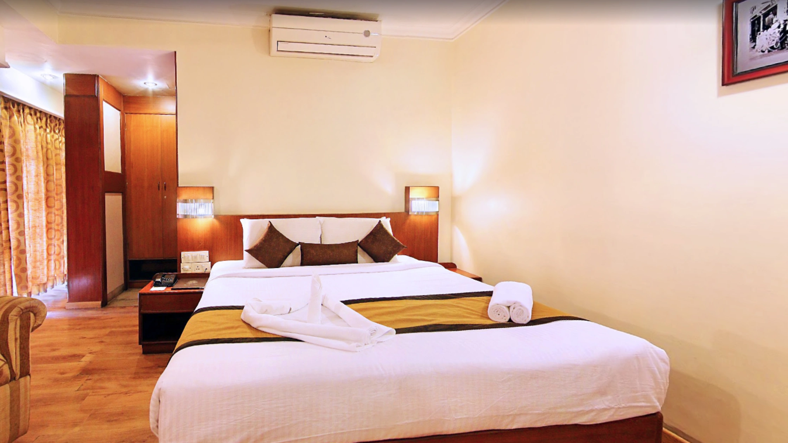

Mysore, also known as Mysuru, is one of the most beautiful and culturally rich cities in Karnataka. Famous for its royal heritage, stunning architecture, and peaceful atmosphere, Mysore attracts travelers from across India and around the world. Among all the attractions in the city, Mysore Palace is the most popular destination. Every year, thousands of tourists visit this grand palace to experience its magnificent design, royal history, and evening illumination.
Because Mysore Palace is located in the heart of the city, many travelers prefer staying nearby so they can easily explore the palace and other major attractions. Choosing a comfortable and affordable hotel close to the palace makes sightseeing much easier, especially for first-time visitors.
Travelers searching for Budget Hotels Near Mysore Palace often look for accommodations that offer a good balance between affordability, comfort, and location. Staying near the palace also allows visitors to reach other popular places such as Mysore Zoo, Devaraja Market, and St. Philomena’s Church within a short distance.
Many visitors prefer well-located accommodations like Maurya Residency, which provide convenient access to the city’s main tourist spots. Choosing the right place to stay helps travelers enjoy their trip without worrying about long travel times.
This guide will help you understand how to choose a comfortable and affordable hotel near Mysore Palace while ensuring a pleasant stay during your visit.
Staying close to Mysore Palace offers many advantages for travelers. The palace is located in the central part of the city, which means most tourist attractions, restaurants, markets, and transportation hubs are nearby.
When you stay near the palace, you can easily walk or take a short ride to many popular places. This saves both time and travel expenses. Tourists also get the opportunity to explore the lively streets around the palace, which are filled with shops, food stalls, and cultural experiences.
Another advantage is the beautiful view and atmosphere around the palace area, especially during evenings when the palace lights create a magical ambiance.
For first-time visitors, choosing accommodation near the palace helps make the trip more convenient and enjoyable.
Finding a good budget hotel does not mean compromising on comfort. A well-chosen hotel can offer a relaxing and enjoyable stay without exceeding your travel budget.
Here are some important factors to consider when choosing a budget hotel:
Comfortable Rooms
A good hotel should offer clean and comfortable rooms. Basic amenities such as a comfortable bed, air conditioning, clean bathrooms, and proper lighting can make a big difference in your stay.
Cleanliness and Hygiene
Cleanliness is one of the most important aspects of any hotel. Travelers should look for hotels that maintain proper hygiene in rooms, bathrooms, and common areas.
Friendly Service
Good customer service can greatly improve your travel experience. Helpful staff who are ready to assist guests with local information, travel tips, and basic needs make a stay more enjoyable.
Convenient Location
A hotel located near major attractions like Mysore Palace can save you a lot of travel time. Being close to restaurants, transport facilities, and markets is also very useful.
Affordable Pricing
Budget hotels should provide good value for money. Travelers often look for accommodations that provide comfort and essential amenities at reasonable prices.
Budget hotels are becoming increasingly popular among travelers. They offer practical and affordable solutions for people who want comfortable accommodation without spending too much money.
Here are some benefits of choosing budget hotels:
Saves Travel Costs
Budget hotels help travelers reduce overall travel expenses. This allows visitors to spend more on sightseeing, food, and shopping.
Ideal for Short Trips
Many travelers visit Mysore for short weekend trips. Budget hotels are perfect for such stays as they provide comfortable accommodation at affordable rates.
Comfortable and Practical
Modern budget hotels offer many essential amenities such as Wi-Fi, television, hot water, and comfortable beds. This ensures guests have a pleasant stay without unnecessary luxury expenses.
Suitable for Families and Solo Travelers
Budget hotels cater to different types of travelers, including families, solo visitors, and business travelers.
Popular Attractions Near Mysore Palace
One of the biggest advantages of staying near Mysore Palace is easy access to several major attractions.
Mysore Zoo
Located just a short distance from the palace, Mysore Zoo is one of the oldest and most well-maintained zoos in India. It is home to a wide variety of animals and birds.
Chamundi Hills
Chamundi Hills offers stunning views of the city and is home to the famous Chamundeshwari Temple. It is a peaceful place for both spiritual visits and scenic photography.
Devaraja Market
This vibrant market is known for its colorful flower stalls, spices, fruits, and traditional Mysore products. Visitors can experience the local culture and buy souvenirs here.
St. Philomena’s Church
One of the largest churches in India, this beautiful structure attracts visitors because of its impressive Gothic-style architecture.
Brindavan Gardens
Located near the Krishna Raja Sagar Dam, Brindavan Gardens is famous for its musical fountain show and beautifully designed gardens.
Staying close to Mysore Palace makes it easier to visit all these attractions conveniently.
Choosing the right hotel can make a big difference in your travel experience. Here are some simple tips that can help you select a good hotel in Mysore.
Check Online Reviews
Reading reviews from other travelers helps you understand the quality of service and facilities offered by the hotel.
Look at Photos
Photos can give you an idea of room size, cleanliness, and hotel surroundings.
Compare Prices
Comparing hotel prices on different booking platforms can help you find the best deal.
Confirm Amenities
Make sure the hotel provides essential facilities such as Wi-Fi, parking, hot water, and room service.
Check Distance from Attractions
Selecting a hotel located near tourist attractions can save time and transportation costs.
If you are planning a trip to Mysore, a few travel tips can help make your journey more enjoyable.
These simple tips can help travelers make the most of their visit.
Mysore offers a unique combination of history, culture, and natural beauty. Unlike many crowded tourist cities, Mysore has a calm and relaxed atmosphere that makes it perfect for sightseeing.
The city is famous for its grand palaces, beautiful gardens, traditional markets, and religious sites. Visitors can explore royal heritage, enjoy local food, and experience the vibrant culture of Karnataka.
Because of its pleasant environment and well-connected transport system, Mysore is considered one of the best travel destinations in South India.
Many travelers consider it one of the Best Hotels in Mysore destination cities because of its hospitality and accommodation options.
Visitors who plan their trip properly can easily enjoy the best Stay in Mysore while exploring all the attractions the city has to offer.
Yes, there are many affordable hotels near Mysore Palace that offer comfortable rooms and convenient access to tourist attractions.
Mysore Palace is located about 2 to 3 kilometers from Mysore Railway Station and can be reached easily by auto, taxi, or bus.
Yes, staying near Mysore Palace is convenient because many tourist attractions, markets, and restaurants are located nearby.
Some popular attractions near Mysore Palace include Mysore Zoo, Chamundi Hills, Devaraja Market, and St. Philomena’s Church.
Two to three days are usually enough to explore the main attractions in Mysore comfortably.
Choosing the right accommodation is an important part of planning any trip. When visiting Mysore, staying close to Mysore Palace can make your travel experience much more convenient and enjoyable. With easy access to major attractions, restaurants, and markets, the palace area is one of the best places for travelers to stay.
Visitors looking for comfortable and affordable accommodation often choose places like Maurya Residency, as such centrally located stays allow travelers to explore the city without spending too much time on transportation.
Whether you are traveling for a weekend getaway, a family vacation, or a solo trip, selecting a hotel near the palace can make your sightseeing easier and more enjoyable. Many travelers who visit the city consider options like Maurya Residency because of the convenient location and accessibility to major attractions.
Mysore offers a beautiful blend of heritage, culture, and natural beauty. With the right accommodation and a well-planned itinerary, visitors can truly experience the charm of the city and create unforgettable travel memories.